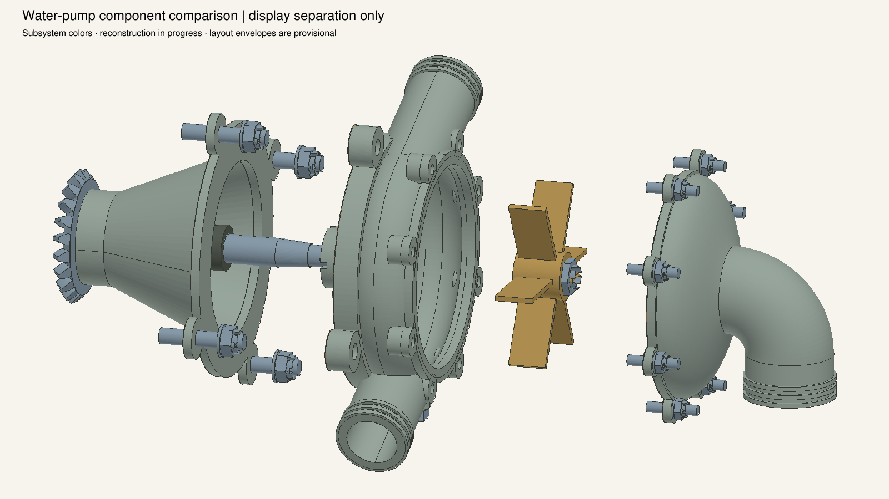
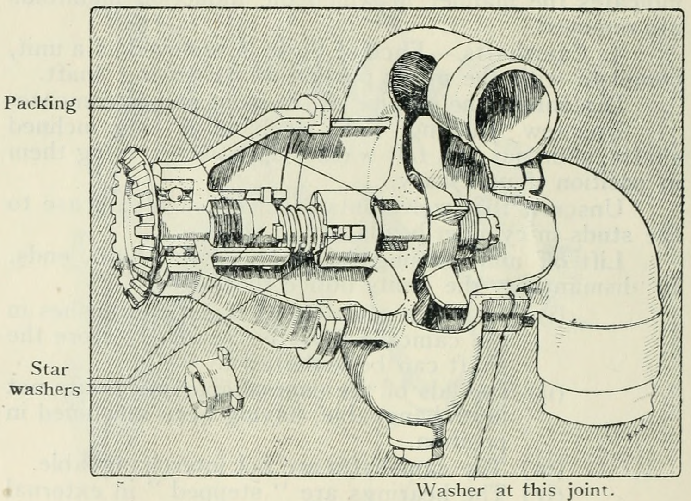
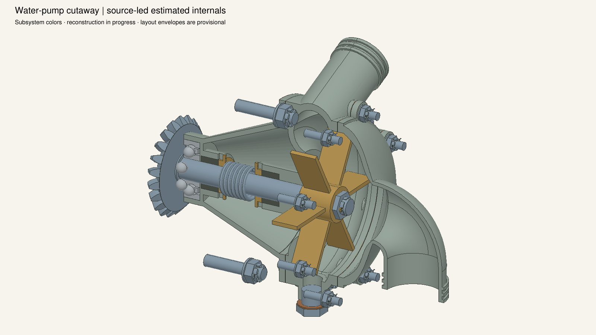
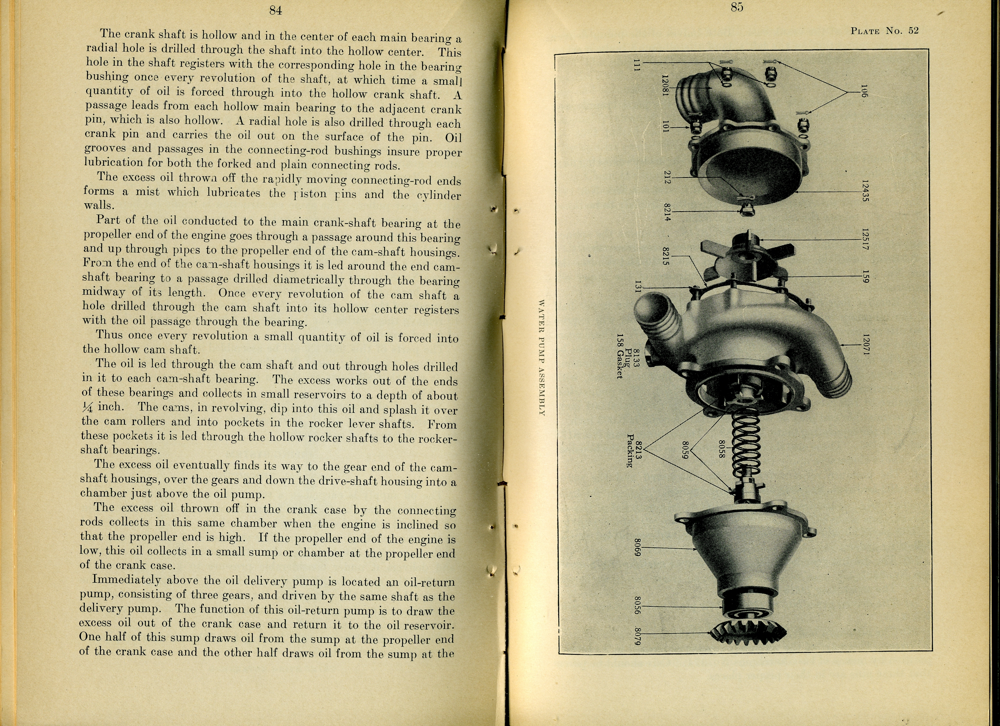
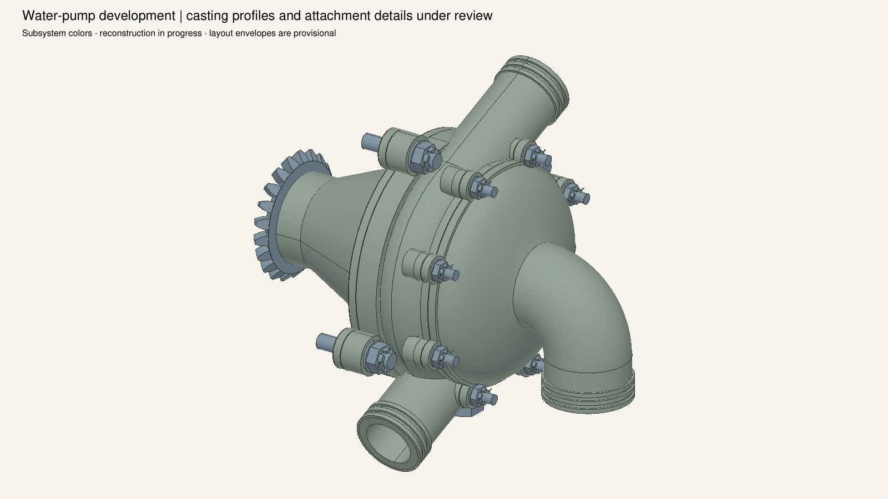
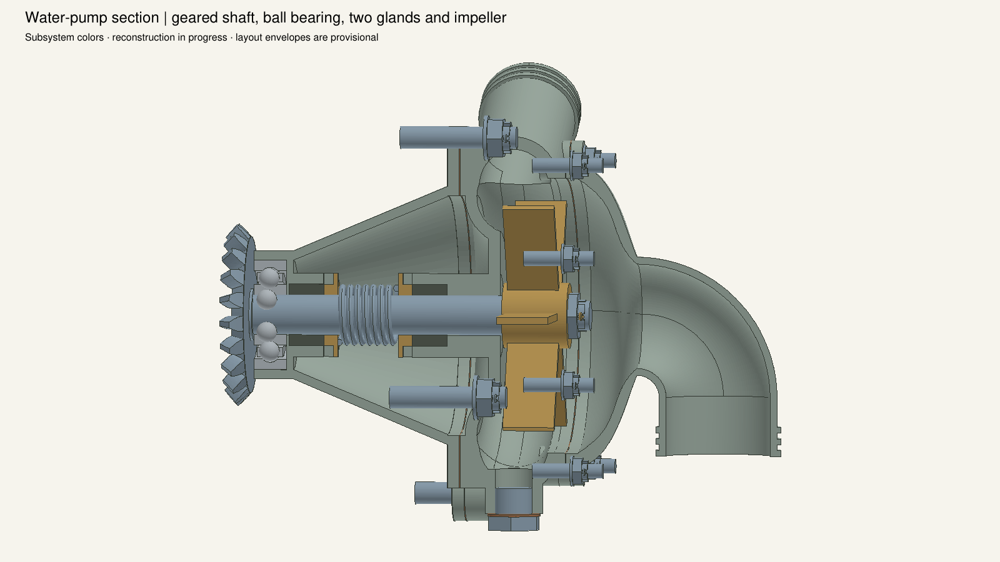
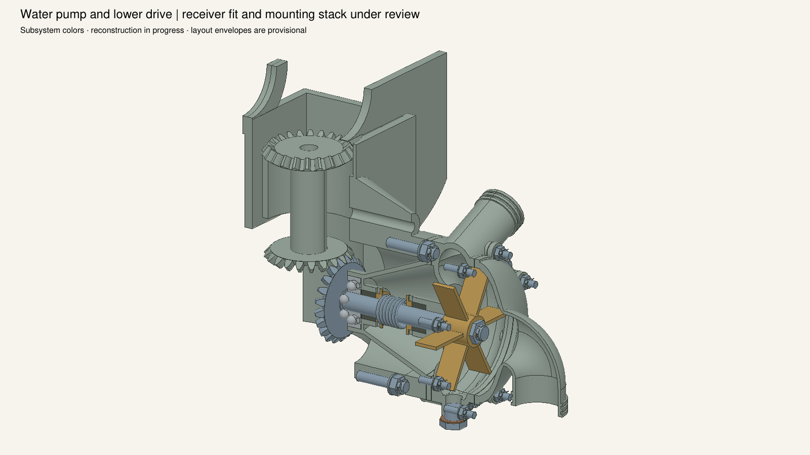

Source-informed arrangement; casting profiles and commercial bearing internals estimated. Packing quantities, inlet-cover identity and case attachment stack remain under review. Source cameras are not registered. All sections and exploded offsets affect display only.






